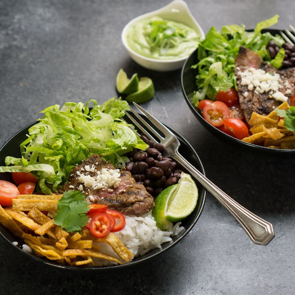

Tex Mex Beef Bowl with Avocao Cilantro Dressing

Description
Looking for something with a twist? These delicious beef bowls with avocado cilantro dressing are to die for! The recipe below is for two people.
Ingredients
Dry Rub
- ½ teaspoon garlic powder
- ½ teaspoon chili powder
- ½ teaspoon kosher salt
- ¼ teaspoon sweet paprika
- ¼ teaspoon ground cumin
Bowl Ingredients
- ½ pound flank steak
- 1 cup cooked white rice
- 1 cup halved cherry tomatoes
- 1 cup chopped romaine lettuce
- 1 cup tortilla chips
- ½ cup canned black beans
- 1 jalapeno pepper, thinly sliced
- 1 lime, cut into wedges
- ¼ cup crumbled cotija cheese
Avocado Cilantro Dressing
- 2 avocados, peeled and pitted
- 1 cup water
- ½ cup chopped fresh cilantro
- 2 tablespoons sour cream
- 1 lime, juiced
- 1 clove garlic
- 1 pinch of salt
Steps
- Preheat a fry pan over medium-high heat until just barely smoking.
- Combine garlic powder, chili powder, kosher salt, paprika, and cumin in a bowl; rub over all sides of flank steak.
- Grill flank steak in the preheated grill pan, flipping halfway through, until browned and cooked to desired doneness, about 8 minutes. Let steak rest on a work surface for 10 minutes. Thinly slice steak against the grain.
- Divide rice, tomatoes, romaine lettuce, tortilla chips, black beans, jalapeno peppers, and lime wedges between 2 serving bowls; top with steak, cheese, and 1 tablespoon cilantro.
- Combine avocados, water, 1/2 cup cilantro, sour cream, lime juice, garlic, and salt in a blender; blend until dressing is smooth. Pour dressing over each bowl.
Looking for our other favourite recipes?